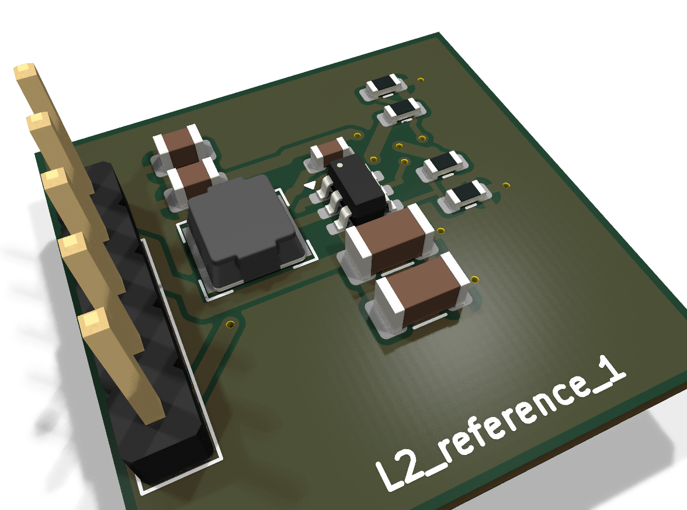

AI can now design circuit boards. Nobody can tell whether a design works until it is manufactured, soldered and measured — two weeks and real money later. Proofboard predicts the measurements in advance, then builds the board, measures it, and publishes how often the prediction was right.

Language models got good at code because code can be checked in seconds. Circuit boards can't: today's checks only ask whether the rules are broken, not what the instruments will read. That missing signal is what slows AI hardware design down.
“Next, we plan to … learn from measurements taken on the finished devices.”
— Anthropic, on Claude designing electronics with Diode, November 2026. Measurement is the acknowledged next step; nobody publishes an open, independent version of it yet.
We focus on a few functions and make them rigorous, starting with one well-understood circuit: a 3.3 V buck converter.
A design names exact catalogue parts with datasheet parameters — not “22 µF”. Every value carries its source page, so any design can be bought, built and simulated unambiguously.
Before manufacturing, the Oracle predicts output voltage, efficiency, ripple and temperature with intervals. Each prediction is hashed and committed to git before the board is ordered, so it can't be adjusted afterwards.
An automated test bench measures the real board in the same format. Every board makes the Oracle more accurate, and every miss is published.
Each design gets two layers of feedback: rule findings with their datasheet source, and a prediction that is later scored against the bench.
Real output of the current checker on the reference design with a deliberately undersized inductor swapped in.
| Operating point | Predicted | Interval vs measured | Result |
|---|---|---|---|
| Efficiency, 7.4 V · 0.5 A | 88.1 % | hit | |
| Efficiency, 8.4 V · 1.0 A | 85.4 % | miss | |
| VOUT, 6.4 V · 1.0 A | 3.312 V | hit | |
| Ripple, 8.4 V · 1.0 A | 18 mV | hit |
No board has been measured yet. This is what exists today.
The cheapest test of the whole idea comes first: if the bench can't tell a deliberately bad board from a good one, we rethink.
Anyone who needs to trust an AI-designed board before paying for it.
An independent exam for hardware design, scored by instruments rather than by rules.
Third-party evidence of first-pass success to show customers.
A prediction of how a board will perform, before two weeks and a fabrication order are spent.